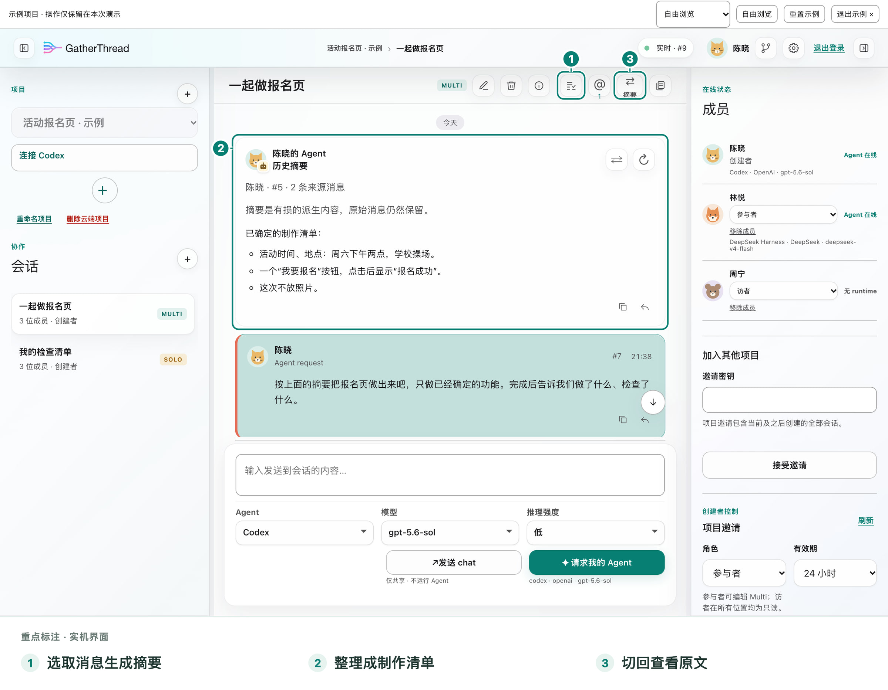
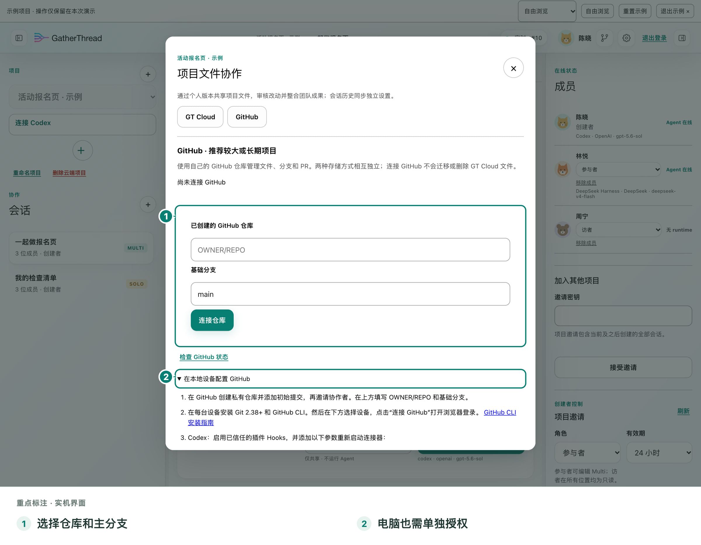
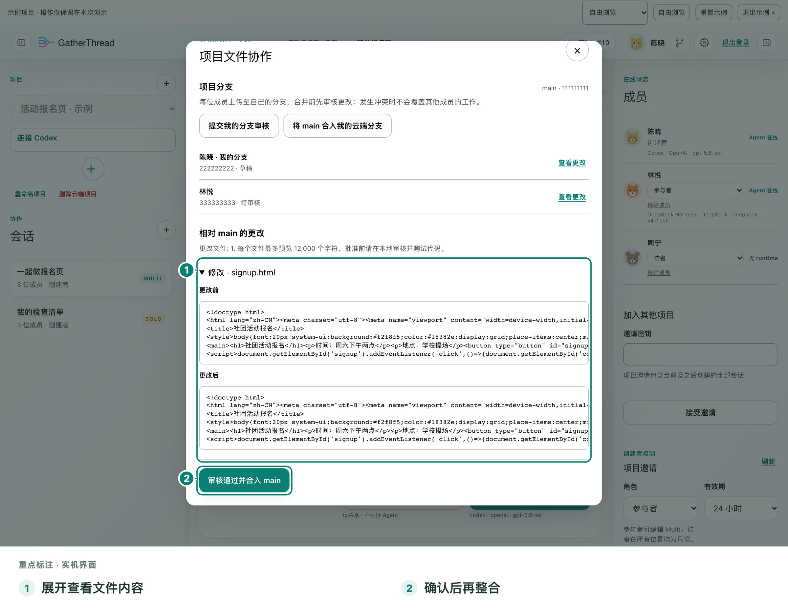

01 / 共享会话
先把事情聊明白。
和同伴直接聊天，引用任何公开消息，或用 @ 定位要找的人。需求、问题与结果留在同一条会话里，后来加入的成员也能接上讨论。
普通聊天不会启动 AI。
多人联机，真正一起推进
一起看懂正在做什么，也清楚是谁请 AI 做了什么。
01 / 共享会话
和同伴直接聊天，引用任何公开消息，或用 @ 定位要找的人。需求、问题与结果留在同一条会话里，后来加入的成员也能接上讨论。
普通聊天不会启动 AI。
02 / 自己的 Agent
连接自己的 Codex 或 DeepSeek Harness，也可直接用云端体验 Agent 做个小任务。按所选 Agent 的能力选择模型与选项，每条回复清楚标明是谁的 AI。
从你的明确请求开始，不默认让多个 AI 自动组队。
共享讨论、引用消息、@同伴，项目里的上下文就在眼前。
聊天与问 AI 分开。每个人选择自己的 Agent，明确提出请求。
同伴看结果、检查文件改动，再决定怎样合到一起。
看一个具体例子
先约定时间、地点和报名按钮。然后请 AI 改文件，让同伴检查，再由人决定合并。

第二步 / 让长讨论更好接续
选择需要的历史，用自己已连接的 Codex / DSH 生成共享摘要。摘要保留原文和版本，可随时切回原文核对；默认供后续网页任务参考。摘要有损，也会消耗所选模型额度。
了解共享摘要
第三步 / 明确请求自己的 AI
各自选择自己的 Agent，明确请求修改页面文件。授权文件协作后，长期项目可用 GitHub 的各自分支；同伴能看到提交的结果，再继续自己的工作。
了解文件协作
第四步 / 人来决定整合
同伴检查活动信息与按钮反馈，阅读文件改动。确认合适后，再由人决定合并。GitHub 走仓库 PR 审核，GT Cloud 由项目创建者检查整合。讨论里说过什么、AI做过什么，都能回头查看。
试着走一遍这是人发起、AI执行、人检查的过程。每个人仍然掌握自己的 AI 与本地工具批准权。
电脑、手机、平板，同一账号
同一账号可在电脑、手机和平板同时使用。打开项目，继续看讨论、回复同伴，或发起明确的 AI 请求。
保存、更新、恢复，按项目选择
真实开发 / 长期项目优先
各自分支，检查后整合。
轻量体验 / GT Cloud
每用户有效文件版本额度。
共享会话、文件上传和设备授权分别控制。本地密钥与工具批准权不会自动交给同伴；上传文件前，仍需检查其中的秘密。
能力与常见问题
Multi 是多人会话，Solo 是个人操作会话。Solo 不是私聊，项目中的其他成员仍可阅读。它们帮助区分多人讨论与个人操作，不改变项目成员可读的边界。
用自己已连接的 Codex / DSH 总结选中的历史，保留原文与摘要版本，也可以切回原文。摘要默认供后续网页任务参考。摘要有损，生成时会消耗所选模型额度，重要细节仍应核对原文。
本地已完成回合可自动或手动上传至共享会话，每条会话都可关闭自动上传。共享历史可在初次连接时导入 Codex；手动导入会新建本地任务，旧任务可自行归档，实时历史传递不受影响。
查看 Codex 连接指南电脑 Agent 处理中可暂停，再继续发起请求。继续会开启一次新请求，读到后来的讨论，不是冻结或恢复原生 AI 的内部推理。
项目创建者邀请同伴、管理角色。参与者可共同讨论，访者只读；参与者和访者可退出他人项目，个人文件分支须先处理。
查看项目管理指南共享会话、文件上传与设备授权分别控制。本地密钥和本地工具批准权不会自动交给同伴。需要文件协作时再授权，上传前检查秘密；GitHub 权限也独立授权。
每台已授权设备可独立撤销，也提供账号注销入口。设备授权与共享会话、文件授权是不同的控制，相关操作与影响可在产品指南中查看。
阅读隐私说明会话支持代码、公式与清晰阅读，让讨论、技术内容和 AI 结果留在同一个上下文中。电脑、手机和平板都可以打开项目阅读。
可以。GatherThread 是开源项目，可按项目文档自托管，也欢迎贡献代码、改进文档与报告问题。具体配置和安全要求请以 GitHub 项目文档为准。
打开开源项目可以直接选择云端体验 Agent 做个小任务，不需安装本地工具或填写 API Key；使用额度以工作页显示为准。也可以先打开自由示例练习，不消耗模型额度。
未来规划
多人 Agent 自动分工、跨成员自动协作和多云端 Agent 团队属于未来规划。当前由每个人明确请求自己的 AI，再由人检查与整合结果。
不必先懂所有术语
叫上同伴，或者先在自由示例里走一遍。
验证邮箱、设置密码并登录，再创建或加入项目。注册与找回密码是否开放，以登录页为准。
直接用云端体验 Agent，或在电脑通过 Codex 启动器、DSH 插件连接自己的 AI。
Codex 指南 →聊天和问 AI 分开。需要它动手时，明确发起请求。
按需要授权文件协作，检查改动，再决定怎样整合。